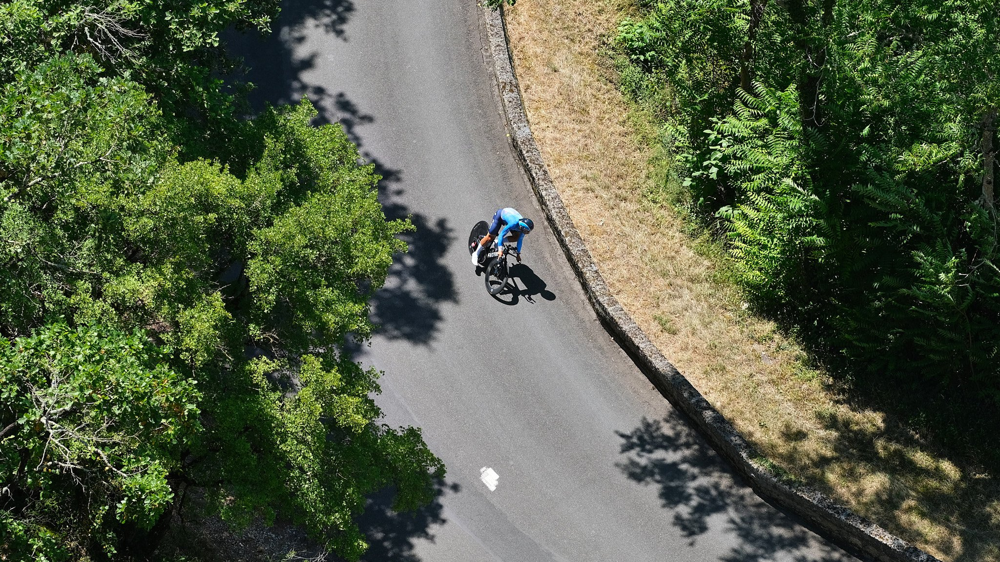
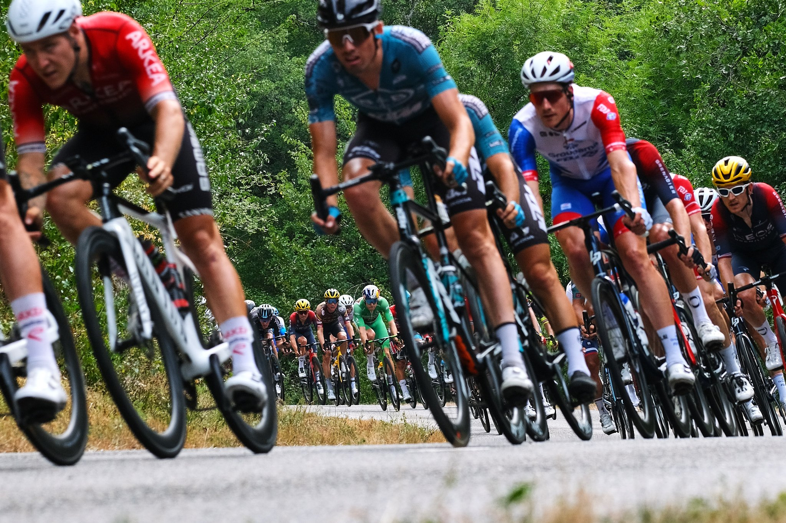
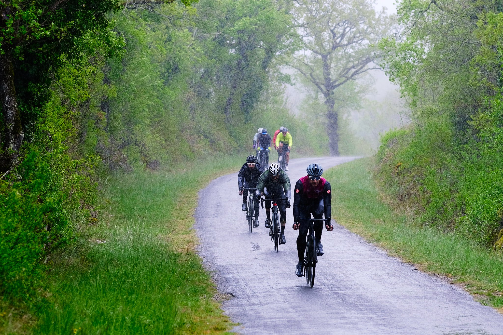
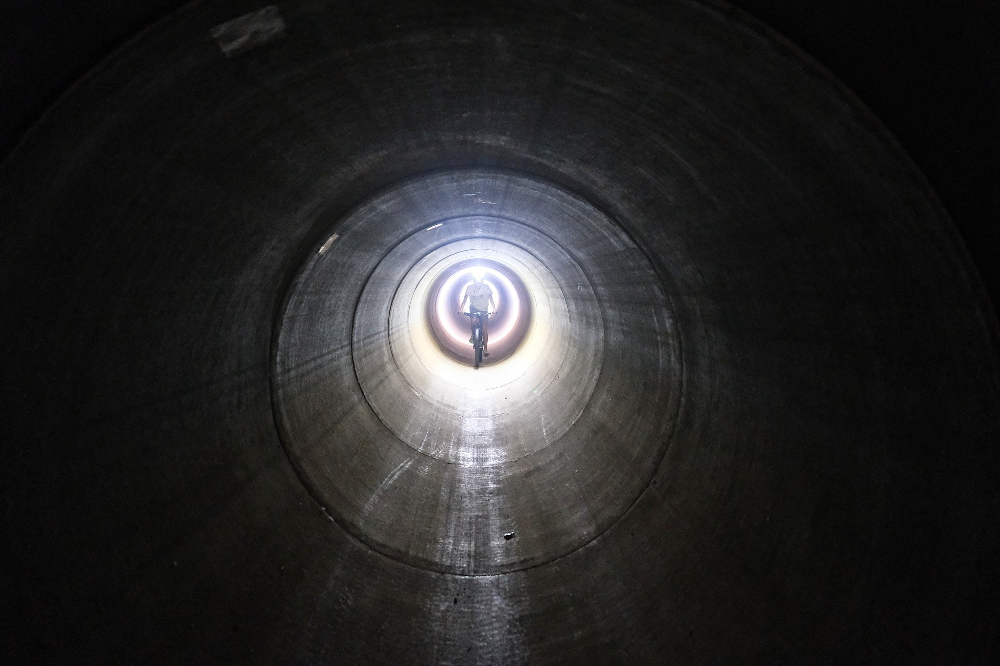
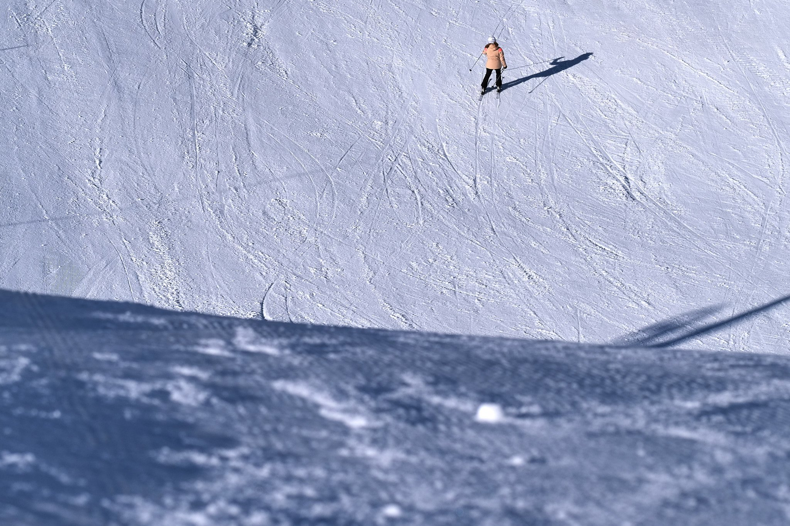
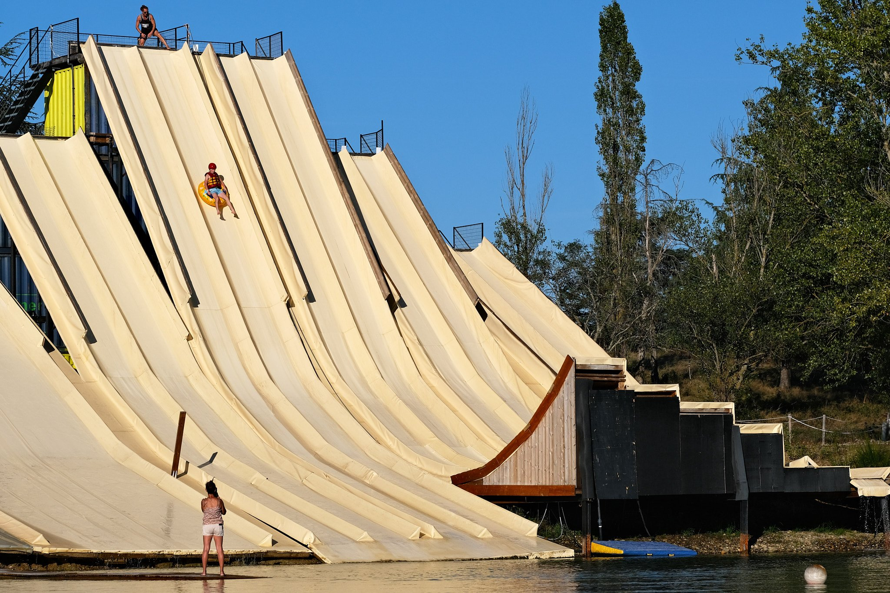
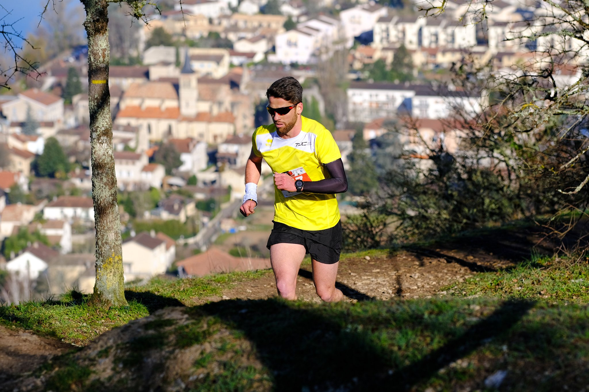
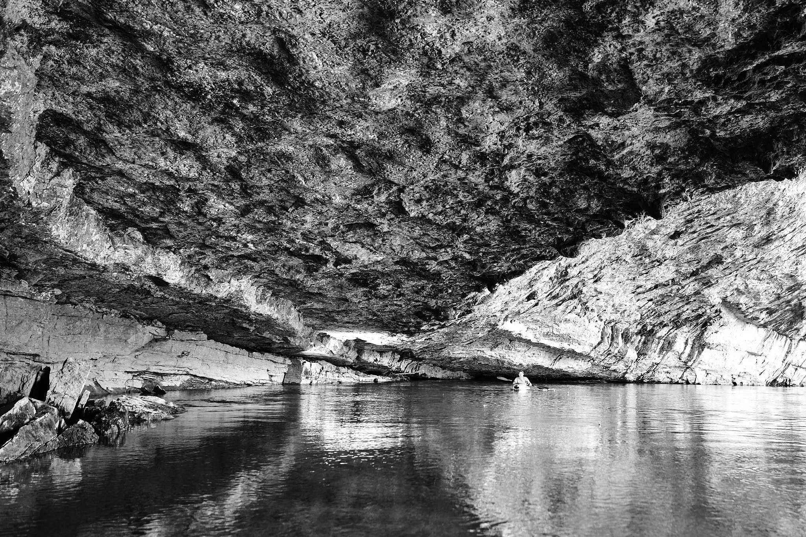
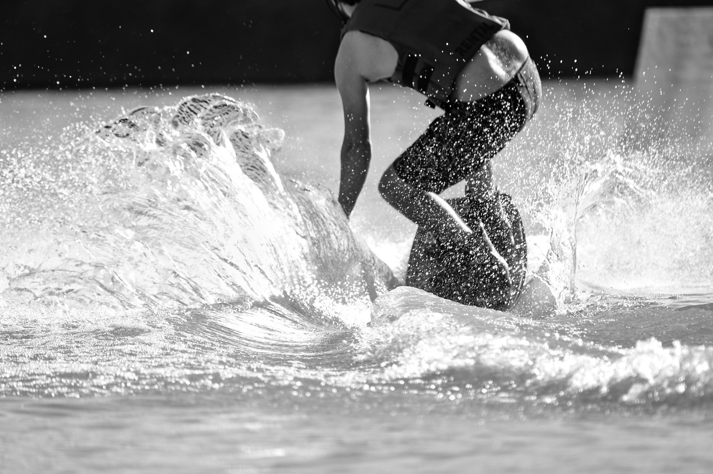
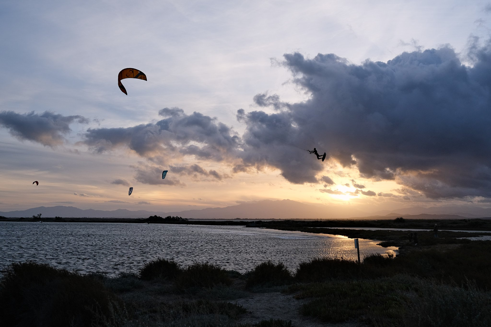

Tour de France 2022 - ISO 320 1/850 s f/5 90mm - FUJIFILM X-S10

Tour de France 2022 - ISO 320 1/680 s f/5 90mm - FUJIFILM X-S10

Lot (46) - ISO 160 1/300 s f/3.2 90mm - FUJIFILM X-S10

Lot (46) - Flash déporté - ISO 8000 1/125 s f/1.4 18mm - FUJIFILM X-S10

Peyragudes - ISO 160 1/1000 s f/4 90mm - FUJIFILM X-S10

Montech (82) - ISO 320 1/250 s f/5.6 90mm - FUJIFILM X-S10

Lot (46) - ISO 160 1/600 s f/3.2 90mm - FUJIFILM X-S10

Cabrerets (46) - Flash déporté - ISO 200 1/140 s f/1.8 18mm - FUJIFILM X-S10

Montech (82) - ISO 320 1/640 s f/5.6 400mm - FUJIFILM X-S10

Leucate - ISO 320 1/420 s f/3.6 18mm - FUJIFILM X-S10
❮
 ❯
❯